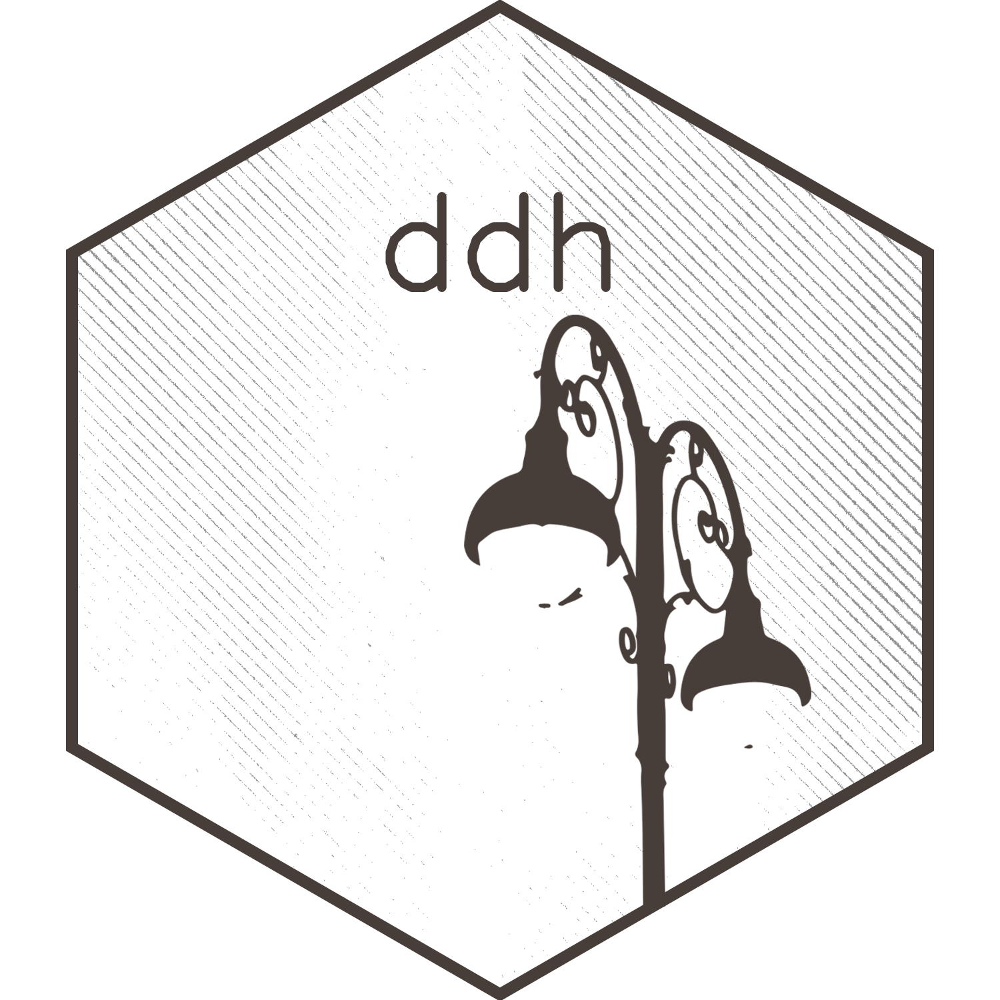
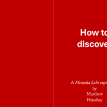

2023 -
Founded Heureka Labs, building AI foundation models trained on multi-omic experimental data to help researchers find patterns in biological systems. Our desktop app, Heureka Bench, brings model querying, lab management, literature curation, and cloud compute into one place for organizing and analyzing scientific work.
2021 -
I am the inaugural Director of the Duke Center for Computational Thinking. The CCT is a University-wide initiative to make computational thinking part of every discipline. Programs, partnerships, and AI literacy work for students, faculty, and leadership across Duke.
2011 -
I joined the faculty of Duke University and started the Hirschey Lab, housed in the Duke Molecular Physiology Institute. The lab studies how cells integrate nutrient sensing and metabolism. I was promoted to tenured Associate Professor in 2019. I also hold a joint appointment at Duke-NUS in Singapore.
2006 - 2011
I did post-doctoral research with Eric Verdin at the Gladstone Institutes at UCSF. I worked on mammalian sirtuins and the biology of aging.
2001 - 2006
My Ph.D. was in Chemistry & Biochemistry at UC Santa Barbara with Alison Butler. I combined inorganic semiconductor synthesis with microbiology, where I functionalized nanocrystals called quantum dots for new kinds of biological imaging.
1997 - 2001
B.S. in Biological Sciences at the University of Vermont, with research in mesoporous silica with Chris Landry and glutathione metabolism with Naomi Fukagawa.
Matthew Hirschey is a tenured Associate Professor at Duke University in the Departments of Medicine (Endocrinology, Metabolism & Nutrition) and Pharmacology & Cancer Biology, and a faculty member of the Duke Molecular Physiology Institute. Since 2021 he has been the inaugural Director of the Duke Center for Computational Thinking. His lab studies how cells integrate nutrient sensing and metabolism, using data-driven approaches to surface new regulatory pathways relevant to diabetes, cardiovascular disease, cancer, and aging. His work has appeared in Nature, Science, Cell Metabolism, and Molecular Cell, and is supported by the NIH, DOD, and OpenAI. He lives with his wife and children in Durham, NC.
At Duke I teach across the medical school, graduate programs, and undergraduate curriculum, with a consistent throughline: using biological data to tell a story. As Director of the Center for Computational Thinking, I also build programs that put computational thinking into the hands of students across every discipline.
Most of my writing shows up in academic journals, but I also have an occasional blog — Heureka Labs — with essays on creativity, computational thinking, and experiments in how we think.
A few selected pieces:


A curated list. For the full record (nearly 100 papers, books, and chapters) see the CV.